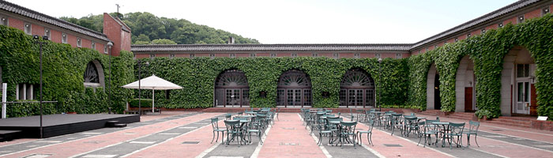
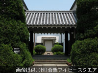
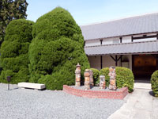
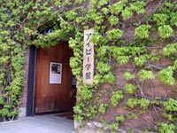
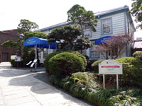
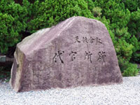
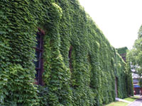

KURASHIKI IVY SQUARE倉敷アイビースクエア

1889年（明治22年）に江戸幕府の代官所跡に倉敷紡績工場が建設され、1973年（昭和48年）に改修されて現在の観光施設になりました。赤レンガと蔦が印象的な施設内には、ホテル、レストラン、多目的ホール、倉紡記念館、児島虎次郎記念館、オルゴール館等があります。
赤レンガを覆う蔦には理由があり、紡績工場であった頃に工場内部の温度調節の為に植えられていました。
倉紡記念館

1969年（昭和44年）にクラボウ創立80周年の記念事業として設立されました。元々は社員の教育の一環として設立された記念館ですが、1971年（昭和46年）から一般公開されるようになりました。館内には1888年（明治21年）からのクラボウの歩みと紡績産業の歴史が年代順に紹介されています。この展示施設には、クラボウの創業当時に建てられた原綿貯蔵用の土蔵倉庫が再利用されています。
愛美工房

陶芸や藍染が体験出来る工房で制作したものは配送もしてくれます。また、ギャラリーとショップも併設されており、ショップでは様々な工芸品や民芸品が販売されています。
アイビー学館

かつては工場であったレンガ造りの建物は、明治22年に建設された歴史的建造物。現在は、展示室・ギャラリーとして利用されています。
オルゴールミュゼ

紡績工場時代の事務所を利用した室内には、シリンダーオルゴールやディスクオルゴールなどのアンティークオルゴールの展示とオルゴールコンサートが開催されています。また、愛美工房と並んでオルゴールショップもあり、お気に入りの曲をオルゴールにすることも出来ます。
代官所跡

1600年（慶長5年）に関が原の戦いで徳川家康を中心とする東軍が勝利し、この地は徳川幕府の天領となり、1642年（寛永19年）に倉敷代官所が置かれました。この倉敷代官所跡に倉敷紡績が建てられ、現在の倉敷アイビースクエアに至ります。天領とは、江戸幕府の直轄領のことで元来は天皇の御料（直轄領）のことを指し、後々に幕府領のことを天領と呼ぶようになったとされています。
赤レンガと蔦

倉敷アイビースクエアのシンボルでもある赤レンガと蔦は、紡績工場であった当時、大原孫三郎氏の「自然と調和しながら健康的な労働環境を」という信念の基に植えられていました。夏は赤レンガに覆い茂り暑さから守り、冬は落葉して赤レンガに外気を当て、内部の温度調節を蔦が見事に果たしています。
取材協力：（株）倉敷アイビースクエア
公式サイトをみる
一覧に戻る